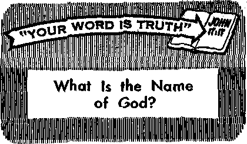

Did a Flood Really Destroy a World of Mankind?
PAGE 5
Your Humble Servant, Abaca
PAGE 9
I Was a Fortune-Teller
PAGE I 2
Preparing for Violence
PAGE I©
the reason for this magazine
News sources that are able to keep you awake to the vital issues of our times must be unfettered by censorship and selfish interests, “Awake!" has no fetters. It recognizes facts, faces facts, is free to publish facts. It is not bound by political ties; it is unnam-pered by traditional creeds. This magazine keeps itself free, that it may speak freely to you. But it does not abuse Its freedom. It maintains integrity to truth.
The viewpoint of “Awake!" is not narrow, but is international. "Awakel” has its own correspondents in scores of nations. Its articles are read in many lands, in many languages, by millions of persons.
In every issue “Awake!" presents vital topics on which you should be informed. It features penetrating articles on social conditions and offers sound counsel for meeting the problems of everyday life. Current news from every continent passes in quick review. Attention is focused on activities in the fields of government and commerce about which you should know. Straightforward discussions of religious issues alert you to matters of vital concern. Customs and people in many lands, the marvels of creation, practical sciences and points of human interest are all embraced in its coverage. “Awake!" provides wholesome, instructive reading far every member of the family.
"Awake!" pledges itself to righteous principles, to exposing hidden foes and subtle dangers, to championing freedom for all, to comforting mourners and strengthening those disheartened by the failures of a delinquent world, reflecting sure hope for the1'establishment of God’s righteous new order in this generation.
Get acquainted with "Awake!" Keep awake by reading “Awake!"
Pttblibhsd Simultaneously in the United States by tub WATCHTOWER BIBLE AND TRACT SOCIETY OF NEW YORK, INC 117 Adams Street Brooklyn, N.Y, 11201; U.S.A.
and in England
WATCH TOWER BIBLE AND TRACT SOCIETY
Watch Tower House, The Ridgeway London N.W. 7, England N. H. Knokk, PreSitient Grant Suites, Secretary
Average printing each issue: 5,000,000 5d ■ eopy (Aurtriiia, 5c; South Africa, J'/se)
Yearly flibscilptlon rates
tffltM* for cemlniEmthlj AiltInns
Canada, 150 Rrldgeland Are,, Toronto 1$, OnL $1 Euiland, Watch Tower Hdum,
N«w Zealand, 621 New North Rd., Auckland 3
Sttth AFrlaa, Private Bftf! 2, P.O. ElandF/onteln, TrL 70c
(NontHiy editions eo»t half the abow flwIttatMW tor subacrtoWmi ahmild ba wit to tte offie* tn your country. Otherwise Mnd your remittance to B^oklyn. Notice of expiration la eeat at leut two issues before wbacriptlan expirem
Now published in 26 languages Somtaowthly—Afrikaans, Cebuano, Danish, Dutch, English, Finnish, French, German, Greek, Iloko, Italian, Japanese, ffni-ean. Ncrwtgiati, Portuguese, Spanish, dwedbli, Sulu.
Monthly—Chinese, Cinyanja, HHUaynon, Malayalam, Polish, Tamil, Ukrainian.
---------------------------------------------j-----------------------j
CHANGES OF ADD8ESS should reach as thirty days' befert ycir moving data. Give 14 yoir old Rad new Htdr«s (If possible, yaar old address label). Write Watch Tower, Watch Tower House, The Rlflgeway, Uadu H.W. 7,
Entered aa Becond-clase matter at Brooklyn,—N.V. FrlBtMl in England
The Bible translation reguJarfy RMd In “Awakel" r* the New World Translation of the Holy Scriptures, 1961 edition, When otbtf tranilatlons are uiecL this fr dearly marked,
CONTENTS
DM a Flood Really Destroy a World of Mankind?
Uruguay Changes Its Presidential System 11
Proclaimers of Peace to the Nations
“Your Word Is Truth.” What Is the Name of God?
“It i» already the hour for you to awake." —Romani 13:11
Voluma XLIX
London, England, May 8, 1868
Number 9
TRUE CHRISTIRI1S ARE
IN THE first century of our Common Era, the people of the vast Roman Empire had a low regard for Christians because
Christian,’ So another, ‘I am astonished that a wise man like Lucius should have suddenly become a Christian.’ Nobody
they were different from the majority. Christians had a higher moral standard that kept them from the gluttony, drunkenness and immorality that were so commonplace then, They refused to burn incense to Caesar, which shocked many nationalistic Romans. They would not join with the Romans in celebrating popular religious holidays, and they refused to participate in the wars of the empire. Because of being so different from the world, the Romans stigmatized them as being haters of mankind and regarded the name “Christian” with aversion.
Arguing against the Roman attitude toward Christians, Tertullian, a writer who lived in the latter part of the second century of our Common Era, said:
“What are we to think of it, that most people so blindly knock their heads against the hatred of the Christian name; that when they bear favourable testimony to any one, they mingle with it abuse of the name he bears? ‘A good man,’ says one, 'is Gaius Seius, only that he is a thinks it needful to consider whether Gaius is not good and Lucius wise, on this very account that he is a Christian; or a Christian, for the reason that he is wise and good. . . . Some even barter away their comforts for that hatred, content to bear injury, if they are kept free at home from the object of their bitter enmity. The wife, now chaste, the husband, now no longer jealous, casts out of his house; the son, now obedient, the father, who used to be so patient, disinherits; the servant, now faithful, the master, once so mild, commands away from his presence; it is a high offence for anyone to be reformed by the detested name. Goodness is of less value than hatred of Christians.”
That Christianity does bring a transformation to the people who embrace it, making them different from their former associates, is pointed out by Peter, an apostle of Jesus Christ. He said: “For the time that has passed by is sufficient for you to have worked out the will of the nations when you proceeded in deeds of loose conduct, lusts, excesses with wine, revelries, drinking matches, and illegal idolatries. Because you do not continue running with them in this course to the same low sink of debauchery, they are puzzled and go on speaking abusively of you.”—1 Pet. 4:3, 4.
There were many pagans with financial interests who came into conflict with the Christians because of their preaching of Scriptural truth, and these stirred up popular hatred of Christians. They included craftsmen who enjoyed economic prosperity from the trinkets and images that they sold to idolaters. People liberated from the chains of idolatry by the truths of Christianity ceased to buy their religious products, and so the craftsmen saw their prosperity threatened. This also was true of the large class of priests and pagan temple servants who received financial support from the idol-worshiping people. That support was threatened by the spread of Christianity. (Acts 19:24-27) So there were a number of reasons for the popular dislike of Christians in the Roman Empire.
In this twentieth century true Christians find that it is as difficult to live a Christian life as it was in the first century. Nationalistic people make the same demands of them that the Romans did of the early Christians, showing the same resentment for Christian determination to follow the instructions of their Leader, Jesus Christ, who said that his followers are "no part of the world.” (John 15:19) Because they refuse to violate their integrity to Jehovah God by joining with the majority of the people in acts of State worship, they are regarded as enemies of the State. Because they refuse to observe popular religious holidays that are actually the same pagan celebrations the Romans had, but renamed to appear Christian, they are accused of being unchristian.
Because true Christians today have obeyed the command at 1 Peter 3:11, tc "seek peace and pursue it,” they have done what Isaiah 2:4 foretold, namely, beaten "their swords into plowshares and their spears into pruning shears.” This has made them different from the majority in all countries of the world, because they do not participate in riots, revolutions, wars and other acts of violence. Here, too, they are like the early Christians, regarding whom Justin Martyr, a Christian writer of the second century of our Common Era, wrote: "We who were filled with war, and mutual slaughter, and every wickedness, have each through the whole earth changed our warlike weapons,—our swords into ploughshares, and our spears into implements of tillage.” In this violent world a peaceful position such as this makes true Christians objects of popular dislike. Consequently, the Russian newspaper Soviet Moldavia branded Jehovah’s witnesses in 1963 as “haters of the human race,” the same false accusation made by the Romans against peaceful‘Christians in the first century.
Notwithstanding such accusations because of their refusal to violate Christian principles and Biblical laws, Jehovah’s Christian witnesses continue to comfort multitudes with Bible truths. Through their preaching of the good news of God’s kingdom they bring to the distressed people hope of a new, righteous and peaceful system of things made by God. (Matt. 24:14; 2 Pet. 3:13) They are uplifting personal moral standards to the high level established by the Bible and are transforming minds to think of ways of doing good to others rather than evil. (Rom. 12:17-21) People are being benefited all over the world because Jehovah’s Christian witnesses, like the early Christians, are different.
Is the Bible account of a global flood true? Is there reliable confirmation of it?
DID God once use an earth-wide flood to destroy all mankind except a single human family of eight persons? If you asked that question of many persons, they would say that the Bible’s account of the flood is only a myth. Even many Catholic priests and Protestant clergymen would answer the same. But what are the facts?
The Bible clearly speaks of an actual flood. It explains that the earth had become “filled with violence” and that “all flesh had ruined its way.” It was for this reason that Almighty God determined to destroy the wicked world of mankind. He told Noah: “I am bringing them to ruin.” —Gen. 6:11-13.
To prepare for the flood, God commanded faithful Noah to .build .an ark and to take his family and representatives of the animal kinds into it. The Bible then explains: God “wiped out every existing thing that was on the surface of the ground, from man to beast, to moving animal and to flying creature of the heavens, and they were wiped off the earth; and only Noah and those who were with him in the ark kept on surviving.”—Gen. 7:23.
That this Flood account preserved in Genesis is not a myth is shown by the fact that Almighty God later refers to his promise concerning the Flood waters. Through his prophet Isaiah he assures his people, saying: “Just as I have sworn that the waters of Noah shall no more pass over the earth, so I have sworn that I will not become indignant toward you nor rebuke you.” (Isa. 54:9; Gen. 8:21) This sworn statement would carry no weight if the Flood had not actually occurred.
Further confirmation of the Nqachian flood is found in the Christian Greek Scriptures. The apostle Peter on several occasions spoke of the event, once explaining that God “kept Noah, a preacher of righteousness, safe with seven others when he brought a deluge upon a world of ungodly people.” (2 Pet. 2;5; 3:5, 6; 1 Pet. 3:20) The apostle Paul also verified the Flood account, telling how Noah “constructed an ark for the saving of his household.”—Heb. 11:7.
Definite confirmation also comes from Jesus Christ himself. Unlike certain critics today, Jesus accepted these events as historical, and the occurrence of the Flood as an actual fact. He spoke of “the days of Noah” and referred to the Flood as an example of what would happen at the time of his second presence and of “the conclusion of the system of things.” (Matt. 24: 3, 37-39; Luke 17:26, 27) What strong confirmation that a flood really did destroy a world of wicked mankind! Certainly Jesus Christ did not believe in and propagate a myth!
However, there is other confirmation of the Flood. Observes a leading Frenchlanguage Bible dictionary: “But there are other proofs of this fact, which providentially came to light when the Biblical narration was under the strongest attack. , . . Many flood traditions exist outside of Genesis.”1
The best known and most remarkable of these traditions is the Epic of Gilgamesh, said to be of ancient Babylonian origin. This written account, dated approximately 2000-1700 B.C.E., was uncovered, along with thousands of other clay tablets, at the site of ancient Nineveh. The discovery occurred in the mid-nineteenth century during excavations of the palace of King Assurbanipal, who reigned in the seventh century B.C.E. However, it was not until 1872 that the British Orientalist George Smith, who was engaged in studying and classifying these finds, identified the account of the Flood that bears such a striking similarity to the Bible one.
Both the Epic of Gilgamesh and the Bible state that the Flood was divinely planned. They both connect the Deluge with defection in the human race. Both accounts tell of the deliverance of the principal character and his family, both explain that the ark or boat was built at divine instruction to preserve life; both tell about the sending out of birds to ascertain the decrease of the waters; both describe acts of worship after the deliverance, and there are other similarities.
However, there are also important and noteworthy differences. Unlike the Biblical account, the Epic of Gilgamesh mirrors the Babylonian belief in a pantheon of jealous, fighting, quarreling and selfaccusing deities. These crouch in fear “like dogs” while the cataclysm is going on, and they disclaim responsibility for it once it is over. Also, after the Flood, when the survivors offer a sacrifice, the Epic of Gilgamesh says the gods “crowded like flies about the sacrificer,” hungrily awaiting the sacrificial food.
The simple, straightforward Biblical history rises far above the Babylonian version. It is absurd to claim, as some (do, that it was derived from the degraded Babylonian account. Rather, the Bible contains the eyewitness report, which apparently was compiled by Moses from two written documents called in the Bible “the history of Noah” and “the history of Noah’s sons, Shem, Ham and Japheth.” (Gen. 6:9; 10:1) These documents are believed to have been written by the Flood survivors, Noah and his sons, or at least to have been in their possession.
Thus, Unger’s Bible Dictionary puts matters in proper perspective when it says of the Noachian flood: “The memory of this great event persisted in tradition. Hie Babylonians received it in a completely corrupted and distorted form. Genesis portrays it as it actually occurred.”
If there really was a flood that destroyed a world of wicked mankind, it would be expected that stories of it would be preserved among the far-flung races of mankind, who all descended from the few survivors. And this is the case! Not only is there ancient written confirmation, such as in the Epic of Gilgamesh, but even down to recent times there are traditions among peoples world wide concerning a universal flood in the distant past.
Tfte Biblical Archaeologist Reader (1961) edited by G. Ernest Wright and David Noel Freedman, notes on pages 32 and 33:
"Indeed, such a story is to be found In a hundred varying forms in countries as far separated as Greece, Mesopotamia, India, Malaya, Polynesia, and the Western Hemisphere—where it is diffused from Tierra del Fuego (islands off the southern tip of South America) to the Arctic Circle. . . . Common to most of them is the recollection bf a great flood which in the ancient past covered all, or a great part of, the earth, and in which all but a select few were drowned. These few, it may be added, usually escaped in a boat or by taking refuge on a high mountain or in a tree."
Also, in the latter half of the last century, the famous Scottish geologist, Hugh Miller, observed in his book The Testimony of the Rocks, page 284:
"There is, however, one special tradition which seems to be more deeply impressed and more widely spread than any of the others. The destruction of well nigh the whole human race, in an early age of the world’s history, by a great deluge, appears to have so impressed the minds of the few survivors, and seems to have been handed down to their children, in consequence, with such terror-struck impressiveness, that their remote descendants of the present day have not even yet forgotten it. It appears in almost every mythology, and lives in the most distant countries, and among the most barbarous tribes.”
True, the Flood traditions of all these remote peoples are not everywhere identical in details. But this is only to be expected, as Professor Henri Luken observes:
“In fact, there is no people on earth who, if they have kept the least trace of the past, have not preserved the memory of the deluge. It is entirely natural that the primitive tradition was not transmitted whole; it took on various mythical forms and adopted shadings special to each nation, but the essence of this tradition remained everywhere the same.”2
Though deformed through generations of telling, these traditions bear striking parallels with the Bible’s written account on three basic points: (1) a universal destruction by water; (2) a place in which a fewi persons survived, and (3) the preservation of a small group of humans.
Also, these traditions often include, as reasons for the Flood, man’s perversity and God’s anger. And, too, the ancestor who survived the Deluge often did so in a closed boat, accompanied by his family, and by animals. In Wales and England a tradition tells how an ancestor escaped in a vessel with a male and female of each animal, and populated Britain.
The native Maori people of New Zealand have a Flood tradition remarkably similar to the Bible’s account. The booklet The Family of the Maori'- (1966), after presenting evidence indicating that the Maoris came from somewhere in Asia, notes:
"Considering the Maori's theory of the origin of the Polynesian race, it is not surprising that they should have had the legend of a great flood in their religious mythology. It is so much like the story of Noah that it needs no elaboration here.”
However, many modern critics deny that these widespread Flood traditions serve as confirmative evidence of the Bible account. They contend that these are simply tales of local floods. In this connection, however, observe the comments of Allah O. Kelly and Frank Dachille in their book Target: Earth (1953):
“In the ordinary experience of man floods are not of such great or of such widespread occurrence that he would generate a story of overwhelming, all-exterminating flood. , . . Why then should practically all races of men have this legend of a great deluge?
Why should people who lived far from the ocean in dry highland country such as central'Mexico or central Asia have a legend of a flood? ... If universal deluge had not been an actuality, then some races would have had their wicked ancestors being eliminated by awesome volcanic eruptions, great blizzards, drought, wild animals, giants or demons. Thus the universality of the deluge story is one of the best arguments for its truth.”
It is unsatisfying to assert that these widespread traditions of a global deluge do not confirm the Bible-account. If there were no traditions, you can be sure that critics would use the lack of such circumstantial evidence as a weighty objection to the truthfulness of the Bible account. As it is, the contention that these traditions all have their basis in local floods simply is not in keeping with the evidence. Observes The Biblical Archaeologist Reader on page 33:
“While some of the stories are no doubt exaggerations of local catastrophes ... it is difficult to believe that so remarkable a coincidence of outline as exists between so many of these widely separated accounts can be accounted for in this way. It is difficult to escape the conclusion that many of them are recollections of a common event, or at least are diffused from a common tradition.
To argue that the amazing similarities in the widespread Flood traditions are simply coincidental reveals a stubborn refusal to accept the obvious conclusion. For, as Francois Lenormant, professor of archaeology associated with the French National Library, pointed out:
“It would be altogether contrary to probability and to the laws of sound criticism to admit that local phenomeha exactly similar in character could have been reproduced in so many different points of the globe as one to explain these universal traditions, or that these traditions would always have assumed identical form, combined with circumstances, which need not have suggested themselves to the mind tn such a connection.’'3
In view of the evidence, only extreme prejudice against the Bible could be responsible for a person’s denying that the widespread Flood traditions are a powerful confirmative verification of the Bible’s account of the Noachian flood.
So we ought to take seriously the Biblical account of the Flood. It should serve as a warning to us. Jesus Christ said: “For just as the days of Noah were, so the presence of the Son of man will be.” —Matt. 24:37.
What happened in Noah’s days? The majority of mankind refused to heed God’s warning given through Noah. Jesus said: “For as they were in those days before the flood, eating and drinking, men marrying and women being given in marriage, until the day that Noah entered into the ark; and they took no note until the flood came and swept them all away, so the presence of the Son of man will be.”—Matt. 24:38, 391.
Jesus said the example of Noah’s day should serve as a warning for us. We are now living in the time that he called “the presence of the Son of man.” The inspired apostle Peter spoke of “the world of that time” that suffered destruction when it was deluged with water, and then said of this time: “But by the same word the heavens and the earth that are now are stored up for fire and are being reserved to the day of judgment and of destruction of the ungodly men.”—2 Pet. 3:6, 7.
So, heed Christ’s warning. Follow Noah’s wise example of obeying God. By doing so you may survive the coming destruction of the present wicked system of things, and live on into God’s promised righteous new system.—2 Pet. 3:13.
Youf Humble Semi
IT IS the doormat upon which multitudes wipe the dust off their shoes. It is the btown envelope in which documents are sealed for mailing. It is the thick Manila paper that some children use to cover their schoolbooks. It is the string for a boy’s kite, the tether for his father’s water buffalo. It can be an exquisite handbag, a pretty pair of shoes or a woman’s bedroom slippers. It may be the white hat a man will wear on a business trip to Manila. It is your humble servant, abaca.
Truly, abaca is a versatile servant, but its most important service to mankind is in the form of rope: rope for the rigging of sailboats, r,ope for the junks and sampans that crowd Hong Kong’s waterfront, rope for the mooring of majestic ships of all nations. Yes, abacd fiber makes fine rope because it is strong and stands up well under long periods of outdoor use, having remarkable resistance to water, sun and wind.
Of the yearly demand for at least a million bales world wide, 720,000 are supplied by the Philippines. The tremendous job of supplying this demand rests on the shoulders of humble men like Otik and Max. Come, let me introduce you to them.
Otik and his family of six live deep in abacd country, on the island of Mindanao. He came here as a young man from Cebu, along with Max and hundreds of other Visayans. They 'came in search of a better livelihood, and possibly adventure, for the Visayan tends to be a nomad. That was some years before World War II swept the Pacific—when Mindanao was still largely

By "Awake!" correspondent in the Philippines
a wilderness. On his homestead Otik planted rice, com, coconut and abaca—but mostly abaca.
Abaca is better known around the world by its export name, Manila hemp, though it is not really hemp and it is not grown in Manila. It is a perennial whose stalks grow in clusters, and is a member of the banana family. Its fruit even resembles the banana, but do not try eating it or you are in for an unpleasant surprise. Its leaves are narrow, stiff and straight in contrast with the broader, gracefully drooping leaves of the ' banana.
Otik owes a debt of gratitude to Wa-tanabe-san, one of the industrious Japanese who developed abacd culture from a local to an international industry. He taught Otik that the plant thrives best on volcanic soil where there is plenty of rainfall, and that it demands lots of shade furnished by the forest. This is why Mindanao proved to be the right place for its cultivation. The plant matures from the sucker stage in about three years, attaining a height of ten to fifteen feet. Only mature stalks produce the finest fiber.
The large leaves, oblong in shape, grow up closely around the trunk of the plant, the bottom parts of the leaves hugging the trunk tightly in layer after layer. Otik recalls how Watanabe-san showed him how to grade the fibers correctly: the outer sheaths contain short, not-so-white, strong fiber; the middle ones have medium-white, reasonably sturdy fiber; the inner ones have the whitest fiber, but are not so strong. The pith of the plant goes to the compost heap.
Since Otik has returned to his old occupation of building,, most of the work on the abacd plantation is left to hired hands. His close friend, Max, is a real authority on the practical aspects of preparing abacd for market. His muscles have been hardened by forty years of chopping down mature plants, cutting away the leaves, peeling off the petioles or stems one by one, and feeding them to the stripping machine. This is a simple device—a serrated steel blade with a block of wood. One end of each petiole is fed into the machine and clamped down, but not too tightly. First, a mighty tug to yank the fiber free from that end of the petiole, and then the other end is fed into the jaws of the machine. Another tug and the beautiful white fiber springs free.
The fiber is then tied into hands—a hand being the quantity of fiber picked up by both hands—and dried in the sun. Max can now afford a generator and an improved stripping machine, but he still maintains that stripping abacd is work for strong men and is at the same time an art. One has to gauge the right amount of tug to obtain the maximum of fiber and avoid undue waste. Skilled hands obtain every fiber from the stalk. Then prompt and proper drying technique produces the whitest and strongest abacd.
Finally the job of Otik, Max and other abacd growers is finished when the fiber has been baled, weighed and delivered by truck to the merchant. But what price they will get for all their hard work is beyond their control. Supply and demand around the world (for abacd is now also grown in Central America) is what Will determine their returns. Sometimes they get very little. Added to their troubles is the fact that sisal, henequen and synthetic fibers are now competing on the world market.
Despite all rivalry, however, abacd still has a promising future. As long as ships sail the oceans it would seem that abacd will be in demand, for no other product matches it in its role of rope that is highly brine-resistant and that maintains tensile strength even after long exposure to sun, wind and rain.
And a talk with Nena reveals other possibilities. She has a small abacd farm near the slopes of Mayon volcano in the Bicol Peninsula. She and her neighbors operate cottage industries that turn out handbags, hats, shoes, slippers and other items that are in great demand. They even pound abacd and weave it into cloth called sinamay, used for mosquito netting and in the garment trade. Even the abacd stumps and discarded stalks are not altogether waste, for Nena and her neighbors, with proper care, manage to harvest a generous supply of delicious mushrooms from these.
Plant disease and impoverished soil are two threatening enemies of this humble servant of man. The abacd needs rich soil and cool shady forest in order to continue producing healthily. The question is, Will men refrain from denuding the land of its sheltering trees, and give the land its needed rest from time to time? Only thus can abacd continue to hold its place as their humble servant.
ITS PRESIDENTIAL SYSTEM
By "Awakel” correspondent
FTER some seventy-eight in Uruguay this to say: “It is necessary to
i hours of debate in parliament fortify the executive power, giving
i in August 1966, constitutional reform was the necessary powers to put in force means to assured for this country in the heart of South assure harmony among the different organiza-
America. Of special interest is one of the amendments whereby Uruguay reverts to rule by one president, after about sixteen years of rule by a college of nine presidents.
Among South American countries Uruguay has been outstanding for liberal attitude and stable government. Up to 1918 the Catholic Church was recognized as the official religion of the country, but in that year a new constitution put into effect complete separation of Church and State. In 1951 one-man rule was superseded by rule by a body of nine presidents, at that time known as the Conaejo Na-cional de Gobiemo.
How did it work? Well, the people voted a party into office, and then the elected party appointed the nine-man presidency for a four-year term: six representatives of the winning party and three of the party with the second-largest number of votes. The council’s chairman, chosen from among their own number, served for but one year, when' another member would take his place.
Those favoring the nine-man presidency point to the fact that it produced maturer decisions and avoided emergence of strong-man rule with all the abuses usually associated with it. However, the 7-to-9 parliamentary vote of 1966 Indicates that there has been considerable change of viewpoint. It appears that the impact of inflation together with other economic ills has hastened the change. The New York Times of August 26, 1966, commented editorially: “It seems sure that Uruguay will change its co-1 eg! si at ure form of government to the presidential system of just one man ruling. Only under this form of government can national expenses be adjusted to national income.”
Under the title "Constitutional Reform More a Necessity than a Desire,” the newspaper La Plata, Montevideo, of August 23, 1966, had tions having to do with the country’s economy.” El Diario, of August 26, 1966, commented: "The co-legislature regime, leading the country to a financial, economic and social crisis without parallel in our history, is giving way to institutions that the Republic needs to organize and to face the future with hope. Without these adequate instruments Uruguay cannot pretend to raise itself Into a developed nation.”
On November 27,1966, Uruguayans had their say on the matter of the changeover. The main streets were plastered with signs put out by the different parties, walls displayed the names of the candidates, and sound cars roamed the streets blaring election slogans. The legislature allotted money to the parties for thftir campaigns according to the number of votes. obtained in the previous election. When ., the election results were tabulated, there were more than enough votes to assure victory for constitutional reform.
The winning Colorado party took office on March 1, 1967. Since that date there have been several devaluations of the Uruguayan peso, with the result that prices are rising higher than ever and the country’s economic recovery appears to be as far away as ever. Many Uruguayans are beginning to question whether the new system under one president and one vice-president will really make any appreciable difference. The national debt still is in the millions of pesos.
God-fearing Uruguayans, those who study the Word of God and learn to put trust in God’s promises, are confident that the only "adequate instrument” to bring solutions to an economic, social and financial crisis that envelops all nations is God’s kingdom by Christ It alone can bring, not reform of imperfect human government, but a complete changeover to a righteous and beneficent administration.—2 Tim. 3:1-5; 2 Pet. 3:13.
IWAS bom of Catholic parents in 1901 in Roure, a city in northern Italy. I was brought up chiefly by my grandmother, who was very religious and spent most of her time praying. Her frequent Warnings that if I was not good I would “see the Devil” made a deep impression on me.
I was nine years old when I had my first strange experience with cards. It was in the winter and snow was falling. I was playing cards with some friends of my age, when suddenly a call and the cry of a bird were heard outside. We distinctly heard the name “Rose!” Puzzled, the men of the house went outside, but they discovered neither the person who uttered this strange call nor the bird. A few days later, to our great con
on the dark background of the trees.
The following year we came to France, and I was put out to work as a maid. From then on, I prayed often and especially for the souls in purgatory. I was so convinced that they existed that I used to hear what I believed were them knocking on the wall of my room in the mornings.
One day, a few years later, when I came home from work, I clearly saw the face of a former neighbor of ours, who had moved away some time before. It appeared on the dial of the big clock in the square that I crossed every day on my way home.
My mother welcomed me at the door with the words: “You’ll never guess who has been to see me today!”
‘Tm sure I can,” I re
sternation, we learned that Aunt Rose had died.
My Aunt Rose and her sister used to come each year to spend the summer with us in the mountains. Like my grandmother, they would hold over my head the threat of the Evil One and tell me that I would “see the Devil.” I heard this repeated so often that finally I did “see the Devil.” Or at least in my childish imagination, impressed by the threats, I thought I saw him. I was eleven years old at the time, but it is still vivid in my mind. I was in a clearing in the wood and it seemed that I could see the Devil plied. “It was Mrs. X—(our former neighbor) .” To mother’s great, surprise, I was right.
When I was eighteen, I had to spend some months in a preventorium. I spent most of my time with the other patients telling fortunes by cards. Of course, we did this simply to amuse ourselves. But before long I became particularly gifted. In fact, my predictions astonished my companions.
I saw nothing in the cards themselves. I just made predictions on the basis of what I felt moved to say. I had no knowledge of any system or scientific method for telling fortunes by cards. However, my “gift” was definitely confirmed.
In 1940 a friend who knew of my success brought a certain midwife so that I could look at the cards for her. I did so, and speaking under the inspiration of the moment, I told her: “You are going to be robbed because of an imprudent act on your part.”
I learned a few days later that a young man that this person received into her home had taken advantage of her hospitality in order to steal a very valuable ring from her. This incident impressed her. “You really must take up fortunetelling by cards,” she said to me. And in spite of my hesitation, she bought me several packs of cards, and even brought me clients.
So that is how I came to start telling fortunes. More and more people began to consult me, and the money they left me encouraged me in this pursuit.
I remember especially an instance that happened during the second world war. A client in tears came to see me. I told her that her husband, whom the Gestapo (German secret police) had taken away, would come back on the fourteenth of the month. He came back that very day. This lady let me know right away, and her husband himself came and thanked me.
Another day I was visited by a man whom a friend had sent to me. As a rule I did not receive men, but he was so insistent that I finally agreed to “read the cards” for him. After a while I said to him; “What a terrible profession you are engaged in!”
“What do you mean?” he asked.
“You trade in human flesh,” I replied.
It was only later that I learned that this man was the owner of a house for prostitutes in the neighborhood.
One day I prophesied to my hairdresser the death of her husband, telling her that in two weeks she would be a widow. Fifteen days later her husband died suddenly from a stroke.
I was never really happy, however, while practicing this magic art. In fact, my capacities worried me and puzzled me more and more.
A Change in My Life
Then, in 1948, one of Jehovah’s witnesses called at my door. He left me a booklet. I still remember the title: “One World, One Government.” I read and reread it and, I must say, it upset all my former conceptions.
When the Witness came back, I could not stop asking him questions! Finally, he left me the book “The Truth Shall Make You Free” The following week I bought a Bible and subscribed for the semimonthly Bible study magazine. Before long, with the aid of this same Witness, I was studying the Bible regularly. Often, the evening our study was held, there were about ten persons gathered in my home. They were friends and clients. I invited them to come and listen to prophecies of a very different nature from those that I used to tell them by "reading cards.”
However, they had little interest in the Bible and its reliable prophetic sayings. Gradually all of them left me as my interest and knowledge of the wonderful Bible truths grew and my efforts to share these with them increased. Nevertheless, later, I did have the great joy of seeing three of my old friends accept these Bible truths.
Set Free by the Truth
Strangely, When I began studying the Bible, I experienced very painful effects. I was supersensitive and extremely nervous without apparent cause. I had nightmares and many sleepless nights, and often wondered what was wrong with me. Finally, I began to think that there was perhaps some connection between my nervous state and the card reading, and that this form of divination or any divination might be contrary to the will of God. So about three months after my first contact with the Bible I said to myself: “It must be the cards that are causing all the trouble.”
Fortified by this sudden conviction, I immediately took out my packs of cards from the little grip where I used to keep them, and threw them all into the fire. It is impossible for me to describe the effect that this resolute action had on me. I felt so relieved, as if eased of a great weight. I was so happy that I would have liked to dance around the kitchen.
That same evening, when the Witness came, I asked him point-blank: “Is it wrong to tell fortunes by cards?” He thought I meant: “Would.it be wrong to have one’s fortune told,” and he replied quickly: “Whatever you do, never go to consult a fortune-teller,” He showed me that it was Scripturally wrong to do so. —Deut. 18:10-12.
Of course, he did not suspect for a moment that I was a fortune-teller. So I confessed that I had practiced telling the future with cards.
“And now?” he asked.
“I have thrown them into the fire,” I quickly replied.
“Was that your own idea?" he asked. He spoke with a significant look on his face that convinced me more than ever that I had done the right thing. I was certain that I had won a distinct victory over the oiie with whom I had so often been threatened in mjt childhood days.
Although I had never been able to tell pay own fortune with cards, a strange thing occurred at the beginning of that memorable year the Witness called at my home. I had accompanied one of my friends to the home of a fortune-teller who read the future in a cup into which she put a certain quantity of salt and then a few drops of water. She said to me: “Madam, your life is going to be completely changed by a young man who is slightly bald. He will be carrying a briefcase and wearing a trench coat and will speak in a rather authoritative manner.”
Since then, when talking with the friend I was with (and who has also become one of Jehovah’s witnesses), ! have often recalled this visit to the fortuneteller. For, remarkably, her predictior. was fulfilled, even down to the very details she gave!
Just three months after I began studying the Bible with the person the fortuneteller described, I started sharing in preaching God's Word publicly to others. And eight months later I symbolized my dedication to Jehovah by water baptism.
Loss of Income, but Greater Gain
Naturally, when I stopped fortunetelling, I lost a source of income, for some days I received from my clients as much as two thousand francs [$4.00] a day— quite a lot of money in those days. It reminded me of what the practicers of the magical arts did in the city of Ephesus when they learned the Word of Jehovah. At Acts 19:19 the Bible says: “Quite a number of those who practiced magical arts brought their books together and burned them up before everybody. And they calculated together the prices of them and found them worth fifty thou-
sand pieces of silver.” I had followed, the pattern of the early Christians by burning my fortune-telling cards.
Since cards are simply inert objects that do not possess any knowledge, and since I had never studied anything about using cards to predict the future, I am convinced that an occult power was using me as its instrument, I believe that the morbid fear of the Evil One that I developed during my childhood, my superstitious belief in survival after death, and my sensitive and emotional nature had made me the unconscious agent of this power. My ESP or occult power to predict certain future things had come from wicked spirits or demons.
The Bible at Acts 16:16-19 tells about a similar case of a girl who was used by wicked spirit forces to foretell the future. The disciple Luke records: “It happened that as we were going to the place of prayer, a certain servant girl with a spirit, a demon of divination, met us. She usea ro furnish her masters with much gain by practicing the art of prediction. This girl kept following Paul and us and crying out with the words: ‘These men are slaves of the Most High God, who are publishing to you the way of salvation.’ This she kept doing for many days. Finally Paul got tired of it and turned and said to the spirit: ‘I order you in the name of Jesus Christ to come out of her.’ And it came out that very hour. Well, when her masters saw that their hope of gain had left, they laid hold of Paul and Silas and dragged them into the market place to the rulers.”
Just as it happened for the masters of this girl, I also lost a source of income, but the truth has caused a fountain of Joy to spring up wi|hin me. Ever since, by Jehovah’s undeserved kindness, I have been drawing strength from that liferenewing fountain.—Contributed.
$1,500 INVESTMENT
‘jg How much would you give so that your mother could have everlasting life? Would $1,500 be too much? Of course not!
One of Jehovah’s witnesses in New Mexico writes:
"Ever since I learned the truth of God’s Word I wanted to explain it fully to my mother, who lived in Korea, I made plans for her to come and live With me for six months. After she came, I made a special effort to talk to her every day about the Bible. Then, before I ever asked her, she told me that she wanted to go to the congregation meetings.
“She enjoyed it very much and wanted to go every time even though she didn’t understand English. Why? She found that everyone was so happy and so joyful. In her words, ‘ft was different.’
“It was at this time that she gave up smoking after having smoked for about fifty years. But she quit without any trouble.
‘When it came time for her to go home, and while we were waiting for the airplane, I told her that my wish was for her to associate with Jehovah’s witnesses at a Kingdom Hall in Korea. I told her that I wanted her to understand more about Jehovah’s purposes for mankind. She said, ‘I will not promise, but, if it is your wish, I will try the best I can.’
"As time went on I wondered wh^t she was doing about the truth. Finally I received a letter. She told me that she had started attending meetings about fifty miles from her home.. Not only was she going, but she was taking my brother’s mother-in-law. Also, I my brother told my mother that he would ( try to go. I was so happy that I cried and | thanked Jehovah God that my wish was | coming true.
I "Now my mother, who is seventy-four years | old, is learning how to live again. If we try, I we have results. I spent about $1,500 for | my mother to learn the truth. I feel that it j was a small price to pay for her to gain the I hope of everlasting life.”
PREPAR
ALL across the United States during winter and spring, police departments have been preparing for another summer of violence. National Guard troops and regular army units also have received special training in riot control.
But the authorities are not the only ones preparing for violence. Reports from city after city tell of a huge increase in arms buying on the part of local citizens in anticipation of future riots. At times the acquiring of firearms has taken on near-panic proportions.
All of this is the aftermath of several summers of racial rioting in the country.
The official record for last year alone gave little grounds for optimism, for in 1967 there were 164 riots in 128 cities. Eight of these were classified as “major.”
The preparations for violence testify to the expectation that it could be a 'hot, ugly summer’ in the United States. The likelihood of more rioting was also suggested by the special riot commission appointed by President Johnson. In its published report, the National Advisory Commission on Civil Disorders said: “We recognize, as we must, that the conditions underlying the disorders will not be obliterated before the end of this year or the end of the next, and that so long as these conditions exist a potential for disorder remains.”
After reviewing the riot commission’s report, U. S. News <f World Report of March 11, 1968, commented:
“It is a grim picture that President Johnson’s riot commission paints of the racial

situation in this country. Seen ahead are not only more—and possibly worse—riots* Americans are warned that continued 'white racism’ could lead to a divided nation, with cities under ‘semimartial law/ t. . . And it may already be too late to avoid another summer of violence.”
Individuals Prepare
Many individuals who never before possessed fireaims have been buying them. Some areas are rapidly being turned into armed camps.
In Detroit alone a 46-percent increase in the rate of pistol registration has been noted since last July’s disastrous riot. The city’s mayor, J. P. Cavanagh, pleaded for a “return to sanity” after noting the frenzied arms race of both whites and Negroes there.
Clinics have been established to teach local residents how to load, aim and fire weapons. In one. clinic in a Detroit suburb hundreds of women have been trained to handle guns. One trainee stated that she wanted “to learn how to handle a gun without shooting myself or anybody else.” Another said that she and her friends "definitely have a fear that a riot might come to their doors.” This was the under-
lying fear of most attending these clinics. Also, the skyrocketing crime rate gave an added motive to such training.
One newspaper noted: “In some homes in suburbs ringing Detroit, basement rifle ranges have been built for target practice. Some homes have stocked extra food in the event trouble isolates them for long.’'—The Miami Herald, March 17, 1968.
A man living in New York city purchased three guns. He commented that no matter which direction rioters would come from “they would get it” if they tried to break into his home. This person, regarded as an average citizen, reflected the concern of a large part of the public in the United States today.
When columnist Stewart Alsop interviewed a twenty-one-year-old Negro about the possibility of riots in Washington, D.C., the nation’s capital, he asked the youth: “Do you think there’s going to be a riot here next summer?” The youth replied: “I sure hope not. If there’s trouble, I’m gonna get somewhere else, but fast. It’s gonna be rough, real rough.” Asked why, the youth replied: “If there’s trouble, they’re gonna move downtown. They’re not gonna bum down their houses—they’re gonna bum down your houses. And everybody in this city’s got guns."
Asked how he knew that “everybody” had guns, he replied that he had gone to a party a few nights before and the host had asked the guests to “park the artillery" on the bed. The youth commented: T counted thirty, forty guns on that bed, everything from little twenty-twos to forty-fives. One cat had three guns—two in shoulder holsters, and a little gun in his pocket.”
After this interview, columnist Alsop concluded: “The more one- examines at first hand the racial problem—infinitely the most serious domestic problem that faces this country—the'inore intractable, the more stubbornly complex, the more dangerous and the more nearly insoluble it seems.”—The Saturday Evening Post, February 24, 1968.
And the New York Times of February 22, 1968, reported the following:
“About 600 Negroes, attending a memorial program for Malcolm X held, at Intermediate School 201 in East Harlem, were urged yesterday to obtain weapons for ‘self-defense’ against whites and to practice using them so that when the ‘hunting season’ came they would be ready.
“The exhortation was given by Herman B. Ferguson, who was suspended last summer as an assistant principal at a Queens public school . . . Mr. Ferguson ... is serving as a paid adviser to the local governing board of I. S. 201.”
Because of all this preparation on the part of local citizens, police departments throughout the country are preparing for trouble. They are girding themselves for violence that could be worse than before because of the number of weapons now in the hands of the people.
Police departments in many localities have been receiving special equipment Weapons being stockpiled include, not only revolvers and high-powered rifles, but also machine guns, armored vehicles and even helicopters.
Some of the weapons developed to handle rioters awed even police veterans. In Los Angeles there was demonstrated a model of a 20-ton armored personnel carrier that would crush a barricade of cars. The tank-like vehicle can carry twenty men behind armor-plated sides. It is equipped with a machine gun, tear-gas launchers, a smoke-screen device and chemical fire extinguishers. It also has a siren that can be turned on so loud and shrill that it is
capable of disabling rioters with its sound. Said one deputy police chief after seeing the vehicle: “When I look at this thing, I think, my God, I hope we’ll never have to use it.”
One of the new weapons designed specifically for riot control is known as Rio-Trol. It is a nontoxic powder that can be spread on streets and then saturated with water. As it soaks up the water, the powder turns into a slick paste. This makes the pavement so slippery that just standing upright becomes difficult. It has been nicknamed “instant banana peel.” A pound of the powder covers an area of about 500 square feet
Another new weapon is called Chemical Mace. It is a potent type of tear gas that turns into a vapor after leaving its can-nister. Producing a man-sized cloud, it can temporarily blind a person with its irritant. It also deprives its victim of oxygen, leaving him winded and comparatively helpless. Hence, instead of drawing his gun or using his club, a policeman may draw his aerosol can of chemical spray to subdue a rioter. It has already been used successfully to stop minor disturbances. Impressed by its potential, more than 3,000 local, state and federal agencies are reported to have purchased the spray gun.
Special training has also been given to police forces so that they can better cope with riots, especially at their outset The Chicago police department has acquired helicopters to transport police more quickly to the scene of a disturbance. It also has a highly mobile 600-man task force designed to instruct the city’s police force in riot control. In Philadelphia, the police department maintains busloads of specially trained and equipped officers in strategic spots, poised to rush to any area where rioting breaks out.
National Guard troops also received intensive training in riot control At the direction of President Johnson, the army’s chief of staff ordered the 400,000 National Guardsmen in the United States to complete a special course in techniques and tactics for controlling civil disturbances. Its objective was, not only to develop skill in putting down riots, but to develop methods of doing so that would minimize injury and destruction. Many authorities felt that the National Guard was inadequately trained for riot duty last summer. As Newsweek of March 11, 1968, reported:
"In Newark, when a National Guardsman fired a random shot and then a prankster set off a string of firecrackers, nervous guardsmen and state troopers opened up on a housing project with massive fire. Two mothers and a grandmother were killed. . . . ‘As a matter of fact’ Newark police director Dominick Spina told the [riot] commission, ‘it was so bad that, in my opinion, guardsmen were firing upon police and police were firing back at them.’"
Also, the performance of guardsmen in Detroit’s riot was questioned by the riot commission, noting that the most efficient riot fighters were the regular anpy troops who were finally summoned. Thus, the directive was issued to improve the performance of the National Guard. Its purpose was summarized by the National Observer of September 11,1967, which said: “President Johnson and military officials hope the new skills of the citizen-soldiers will minimize any future ravaging and its consequences.”
Standing behind local police forces and National Guardsmen are the specially trained and equipped regular army troops who can be flown, on very short notice, to any trouble spot.
^earful of Future
Thus, as summer approaches in the United States, law-enforcement officials everywhere wait uneasily, all too aware
that a minor aisruroance can easily flare up to gigantic proportions. Those who Impartially survey the situation note the ominous gloom that is present in most of the nation’s major cities. And bringing fear into the hearts of many officials is the knowledge that the conditions that were present when previous riots occurred are still there. In many cases, these conditions have worsened. As Life magazine of March 8, 1968, observed: “No one has yet succeeded in reversing the drift toward decay of an entire ghetto.”
The despair of many officials was echoed by United Press International writer Louis Cassels. As reported in the News of Framingham, Massachusetts, on August 9,1967, he stated:
"The black uprising in America’s cities is far more extensive and far more serious than most white people believe.
"It is NOT a passing phenomenon, stirred by ‘outside agitators.'
"It is NOT a mere outburst of hooliganism by a ‘small minority of lawless people.’
"It is NOT a new phase of the civil rights movement-—although it may disrupt indefinitely that attempt to gain equality for Negroes by nonviolent means....
"After visiting riot areas in Detroit, Newark, Rochester, Toledo, Harlem and other cities and talking to hundreds of Negroes, public officials, social scientists and law enforcement officers, I am convinced that we were all hasty in the earlier 1960s in describing as a revolution the Negro’s struggle for equal rights before the law. This is the revolution. That was just a preliminary.”
No doubt you share the concern of others about the possibility of renewed violence. But what will you do to protect yourself?
After learning of the stockpiling of arms by many individuals it may be a normal reaction to conclude that the only thing to do is to j’oin in acquiring weapons.
Yet, interestingly, many do not share this viewpoint. Particularly is this so of those who have respect for God and his laws, Christians who really believe the Bible view things differently because they realize that all the conditions now striking fear into men’s hearts were foretold in God’s Word. The Bible clearly shows that the present difficulties are sure evidence that we are living in the “last days” ®f this system of things. (2 Tim, 3:1-5) The Bible also shows that in these critical times people who turn to Jehovah God would not be doing what the crowds are doing. They would, instead, be listening to the counsel in God’s Word. They would be applying that counsel in their lives, appreciating that their greatest security and happiness come in living by Bible principles.
By applying Bible principles regarding conduct in difficult situations, the Christian knows that he will be working toward his best interests. He will also be pleasing God, which is even more important.
Notice how living by Bible principles can help a person in times of stress. For instance, the Bible principle at Proverbs 26:17 says: “As one grabbing hold of the ears of a dog is anyone passing by that is becoming furious at the quarrel that is not his.” A person who applies this principle does not let himself become involved in rioting, nor does he take to the streets out of curiosity. Instead, he retires to a place of safety whenever possible and waits until the disturbance subsides.
But tod often persons ignore this sound Bible counsel and pay a heavy price as a result. For instance, when riots flared in New York city’s Spanish Harlem last summer a forty-four-year-old mother of four children went to the window and looked
out to observe the riot on the streets below. As she looked, a bullet tore into her head. She was killed instantly.
Also, it is commonly thought that arming oneself means greater protection. But Christians are counseled to “seek peace and pursue it.” Thus, as Bible prophecy shows, in these “last days” they “beat their swords into plowshares and their spears into pruning shears, . , . neither will they learn war any more.” (1 Pet. 3:11; Isa. 2 :2-4) By not arming himself in advance, the Christian will never be the one whose gun kills a member of his own household by accident. He will not be killed himself if another member of his family, in some disturbance, uses the weapon carelessly.
Consider the instance of a man in Indiana. While he was in his house a brick smashed through his window. He grabbed his shotgun, and when he saw a shadowy figure crouching in the bushes he fired one blast. Then he heard the cry, “Dad!” He had fatally shot his eighteen-year-old son by mistake! The son had gone out to empty the garbage and the vandal had vanished. Standing over his dying son, the father moaned: "I’ve shot my son. My God! I’ve shot my son.”
In another instance, a four-year-old boy shot hihiself by accident while playing with a ,22-caliber revolver belonging to his father. Then there was the youth who was,showing his friends a pistol when it accidentally went off, sending a bullet through, his head. He died immediately.
Also, when riots flare up, just how much protection would a revolver be against a mob that invades your home? Hpw long could you last if you fired into an armed mob that surrounded you? True, some may say that "I'll get one of them before they get me,” but that is not the Christian viewpoint. The Christian is not out for vengeance, but for the protection of himself and his loved ones within the bounds that God’s laws and principles allow. Indeed, seeing a person without a weapon in his home, a mob may be less inclined to kill than they would if fired upon. In any event, the Christian does not take the law into his own hands. He allows law-enforcement officials to bear this responsibility. He does not want to incur bloodguilt before Jehovah God.
Of course, there is much injustice that needs correcting. There is much prejudice that needs to be wiped out. But the Biblebelieving Christian is not torn apart by anxiety over all this. Why not? Because he knows that neither he nor any other human will be able to remedy man’s ills. Only God can, and will. Yes, Jehovah will certainly provide the remedy for these distressing conditions, and very soon at that!
How will God do this? Bible prophecy shows that soon God will take a direct hand in man’s affairs. He will bring to a sudden end all violence, violent persons and the injustices and prejudices that breed violence. At the battle of Armageddon, Jehovah God himself will bring an end to this entire wicked and violent system of things. Then he will replace it with his new system of things in which, as the Bible promises, “righteousness is to dwell.” —2 Pet. 3:7-13.
Thus, while others prepare for violence, the Christian guided by the wisdom of Almighty God pursues peace. This superior wisdom gives him the best protection in these crisis-filled times. That is why Christians today can be calm and optimistic even though surrounded by a society that is plagued with violence and preparing for more.
WHY should there ever have been need for\a city of refuge in Hawaii, the haven to which so many thousands of northerners flee from the biting winds of winter? That is the question that may come to mind when one learns of the City of Refuge National Park, established in the year 1961. Located at Honaunau, on Hawaii’s largest island, this park has now become a point of attraction to tourists and natives alike. But what is the significance of the name?
To get the explanation we have to turn back the clock to the fifteenth century C.E. Conditions on the Hawaiian Islands were not by any means peaceful. Kings and petty chieftains were continually at war with one another. The rank and file were helpless to rectify matters, for priests and chiefs exercised absolute authority over them. As in so much5 of human history, false religion was at the root of the mental and physical bondage under which the common people labored.
The earliest settlers, Polynesians, brought with them the religious belief that their chiefs were descendants of the gods and inherited a superhuman power called mana. Under this pagan religious system there was a set of taboos called kapu, taboos that controlled almost every action of every person. Violations of any of the kapu regulations, whether intentional or accidental, were punishable by death.
What had to be guarded against, at all cost, was contamination of the mana. The danger of contamination had two aspects: the danger to the commoner of getting into the “radiation field” of the chief; and the danger of his commonness corrupting the spiritual power of the chief, since mana was believed to leak into anything the chief was near or touched. And contamination might evoke the anger of the gods—anger that might take the form of disasters such as lava flows, earthquakes and tidal waves.
Commoners had to squat and hide their heads when any object belonging to the chief passed nearby. If the chief himself was passing, they had to prostrate themselves. The footfall or even the shadow of a commoner could violate the sacred ground where the chief walked. The grounds surrounding a chief’s residence were specially marked off by kapu sticks—a coconut draped in white tapa cloth atop each stick. Swift death
was the punishment of trespassers.
No wonder, when passing these sacred areas en route to the canoe landing, the native would choose the makai (seaside) in the morning so his shadow would fall away from the “holy” ground, and in the evening he would return by the mauka (mountain) side, so his shadow would fall toward the mountains. He well knew that offenders were offered as sacrifices to the angered gods, and that the corpses, having been dragged to the temple and offered to the idol, were laid face down and left to rot in the blazing sun!
Treatment of Women
Women occupied a menial place in those early times. They were forbidden to eat pork or coconut. Only the males could partake of such items, considered to be the special foods of the gods. The woman was not even allowed to tohch those foods, or prepare them for her husband. He did his own cooking to protect their purity. Thus mother and daughters ate separately from father and sons.
If the woman so much as ate a banana, she had committed the unforgivable sin, and must die. Infanticide was common, the victims being mainly females. If a chief fell ill, or a war was about to start, or a volcano was erupting, there was great demand for human sacrifices to propitiate the gods and court their favor. It may well be supposed that women and girls would be the chief sufferers. Potential warriors could not be spared.
One Redeeming Feature
Amid all the perplexities and fears engendered by the kapu, system; there was one redeeming feature. When violators of mana sought to avoid a horrible death, or when warriors, aged people and infants fled before the victors in tribal warfare, there was hope for them. Missionary and author wiuiam tuuis aescrmes mis feature in this way: "One merciful provision, however, had existed from time immemorial, and that was sacred inclosures, places of refuge into which those who fled in time of war, or from any violent pursuer, might enter and be safe. To violate their sanctity' was one of the greatest crimes of which a man could be guilty."
Indeed, it was one of the obligations of each maHa-filled chief to show mercy and to improve to some extent the lot of his subjects. So, to achieve this, the chief would set aside a few acres of his own land as a refuge. Any fugitive, whether intentionally or unwittingly guilty of a crime, was immediately ‘de-contaminated’ and granted the protection of the gods if he could but reach the boundary of the refuge enclosure before he was slain.
One of those refuges was located on the Kona coast, where the slopes of the mighty Mauna Loa plunge down into the Pacific. A twenty-acre shelf of ancient lava forms the foundation of this refuge or jm’uhonua. It is rather square in shape, with the ocean fronting on two sides, and a wall, built at a later date, extending along the other two sides.
But the wall alone is a wonder! It averages ten feet in height, seventeen feet in width, with a total length of 1,000 feet. The masonry is unique, for the early Ha-waiians laid their stones dry, without mortar. The flat face of each stone faces outward, and the other sides were neatly fitted to each other without the aid of metal tools. The largest stone on the face of the wall is six and a half feet high, more than five feet wide, and two feet thick. It weighs between four and six tons. Such huge blocks were maneuvered into place with wooden pry bars, rollers and Skids.
Within the enclosure is the temple, called a heiau. Here and at other such
temples throughout the islands many human sacrifices have been offered, but not persons who fled to and reached the refuge. The gates were kept open perpetually, and any refugee was sure of admittance and protection. Regardless of his crime, real or supposed, there was no trial to establish innocence or guilt. All he had to do was go immediately before the grotesque idol, make a short address expressing thanks, and he was free to come and go as he wished, since he was now believed to be clean of all guilt.
War Refugees could flee here, and since war in Hawaii had as its objective the extermination (of the enemy, it was appropriate that there were such refuges available. In time of war white flags atop long spears were unfurled, one at each corner of the refuge enclosure, a short distance from the walls on the outside. These waved as beacons of hope to defeated warriors and their families. The victors could chase them and slay them right up to this point, but from there they dared not advance one step, on pain of forfeiting their own lives.
Thus, during all the years when the Catholic church’s dread inquisition in Europe left hordes of refugees without protection or asylum, and while the Thirty Years’ War raged, the cities of refuge at Honaunau and other places in Hawaii continued to function. Within some of the enclosures can be seen the tombs of kings and chiefs who continued, though dead, to be viewed with superstitious fear by the natives. Finally in 1810 King Kamehame-ha united the islands into one kingdom. His successor abolished the fcapu system and destroyed practically all the temples.
articles in the next issue
• Unforgettable Moments of Pleasure.
* Lovers of Pleasures Rather than Lovers of God—a Warning Sign.
• India's Varied Burial Rites.
• You Can Teach Your Children to Read.
The refuges were no longer places of sanctuary.
Though rendered valueless in 1819, nothing had ever been written into law revoking the privilege of asylum in such places. So, in 1957, a convict who had escaped from a South Carolina penitentiary fled to Honaunau’s refuge enclosure. It appears he had confessed to a Catholic priest, and was thereafter taken to see a lawyer. The lawyer and the priest provided him with food, auto transportation to Honolulu airport, and a plane ticket to Kona. There another priest met him and drove him the remaining twenty-five miles to the enclosure. Not long, however, did he stay amid those beautiful surroundings. The police sent him back to finish out his prison term.
Other such places1 of refuge mentioned in history come to mind. For example, throughout Christendom church premises were at one time claimed to be asylums for refugees. And it is well known that her priests used to extend the privilege of sanctuary even to known criminals. As in Hawaii, no court hearing was provided, no effort to determine guilt or innocence. On the other hand, the refuge provision mentioned in the Bible was only for unintentional manslayers, and provision was made for a proper hearing to determine whether the refugee was worthy of the protection thus afforded.—Num. 35:11, 22-25.
Hawaii’s City of Refuge National Park, however, is now a quiet, unspoiled place where visitors of all nations, as well as the native population, can enjoy a temporary refuge from the bustle and pressures of life in this twentieth century.
Forty-fifth Graduating Class of the Watchtower Bible School of Gilead
In the list below, rows are numbered from front to back and names are listed from left to right in each row.
(1) Guerrero, M., Hart, E., Ramseyer, J., Sharman, M., Barker, P., Rittenhouse, V., Pyle, S., Petras, R., Birtles, P., Kopsies, S., Johnson, Y.,
Lucas, J., Lee, A. (2) Large, V., Hubbard, C., Latimer, L., Parr, C., Poling, B., Lee, J., Wax, J., Williams, K., Zwiep, M,, Zwiep, M., McMillan, L., Carr, M., Yasovsfcy, S. (3) Kalwat. B., Sokollek, A., Schbche, B., Rodriguez, P., Robison, G., Johansson, L., Clear, R., Ritchie, L., Redman, L., Levine, C., Koltzau, D., Verbrugge, R. (4) Graf, R., Vetrovsky, L., Verbrugge, G., Shirton, L., Rodriguez, F.»
James, P., Renoldner, A., Ramseyer, H., Prdpstl, G., Hart, R., Powell, R., Froyd, L., Cochrane, M. (5) Reams, C., Jorgensen, A.,
Nelson, J., Kopsies, L., Lucas, J., Hiltbrand, F., Skarda, J., Yasovsky, W., Stanfield, J., Clark, I., Callaway, G., Barker, J., Karlsson, B. Ju (6) Cone, G., Sotelo, A., Sharman, F., Powell, R., Petras, T., Nylund, J., Johnson, M., Neuhardt, J., McMillan, D., Little. D., Lewis, J.,
k- Lesky, P. (7) Cormican, H., Genrich, C., Fierke, H., Williams, D., Koch, B., Danielsson, R., Rittenhouse, W., Prdpstl, H., Hauck, O.»
Arthur, C.» Aiderman, R., Bohannan, A., Bretzke, F. (8) Parr, R., Pohl, H., Birtles, B., Latimer, T., Fynn, R., Ward, R., Kratt, 1., Ed Renoldner, J., Wax, S., Teichmann, R., Petrovic, P., Lea, E.
PROf LUWEILS OF PEACE TO THE MTIOIS
WHEN Jesus Christ was on earth he sent out seventy disciples, instructing them to tell the people: “The kingdom of God has come near to you.” (Luke 10: 1-9) After his resurrection from the dead, he instructed his apostles to expand their proclaiming of Christian truths to all nations by telling them: “Go therefore and make disciples of people of all the nations.”—Matt. 28:19.
Several years later the apostle Paul and Barnabas were sent out at the direction of the holy spirit to proclaim the peaceful message of Christianity to people outside the Roman provinces where Jesus had preached. (Acts 13:2-4) Paul went as far as Rome and possibly to Spain doing this divinely commissioned work. The good news he preached about the Prince of Peace and the kingdom of God was for people, of all kinds. It is no different today.
Now that we are approaching the end of the present system of political nations and the time for God’s kingdom under the Prince of Peace to usher in a new era of peace, it is especially timely for proclaim-ers of that kingdom to be sent out to the nations of the world. Every year since 1943 the Watchtower Bible School of Gilead has been doing just that.
On March 10,1968, the forty-fifth class of students trained by this school graduated. Its 101 graduates were sent out to proclaim the good news of God’s kingdom to the people of thirty-four lands. During the week immediately following their graduation forty-nine of them were already winging their way by airplane to the various countries to which they were being sent.
Twenty-seven of the graduates were assigned to eight African countries, thirteen to four countries In the Far East, sixteen to seven countries in Europe and forty-five to fifteen countries in North, Central and South America. In all these countries they will proclaim the Christian hope for world peace, a peace that man’s great Creator has promised to establish by means of his kingdom under the Prince of Peace, Jesus Christ.
The students had been brought to Brooklyn, New York, where Gilead School is located, from eleven countries. AU had been spending their full time in the Christian ministry as Jehovah’s witnesses for at least the past two years. The number of years they have been active as Jehovah’s witnesses averaged 8.9, and the average age of the students was 25.8, which means that some of them were not even born when Gilead School was begun in 1943. Twenty-five of the class were single men; thirty-four were single girls and the remainder were married couples. All of them are fully devoted to the service of their Creator.
On October 23, 1967, the students began school with an air of excitement in their new surroundings. Before many days had passed they were comfortably settled in the daily routine of the school, which had a very heavy study schedule for them.
They had come to the school with the attitude expressed by the prophet Isaiah, who said: “Here I am! Send me.” (Isa. 6:8) As might be expected, they tingled with expectation on the evening of December 25, 1967, when the president of the Watchtower Society called them one by one to the platform before an audience of nearly 1,000 persons and gave to each his or her foreign assignment. That night many were late in falling to sleep as they thought about the country to which they
were going. From then on, all that eacn learned was with that country in mind.
The Curriculum
As can well be imagined, the curriculum of Gilead was designed to prepare the students for the Christian work they would be doing in their foreign assignments. They already had a good background for it because of being engaged in the Christian ministry full time before coming to Gilead.
The curriculum is divided into four Quarters of five weeks each, which permits two classes a year. As with other classes, the forty-fifth class was divided into four groups of students, with two groups attending school in the morning and the other two in the afternoon. Half of the day was spent by the students at work assignments in the Watchtower Society’s huge printing establishment.
In the course of the four quarters the students studied the entire Bible, all sixty-six books, taking most of it chapter by chapter and a large portion verse by verse. They prepared reports for verse-by-verse discussion in class, making use of the school’s well-stocked Biblical library. They also had discussions and forum sessions on basic Bible doctrines, as well as a consideration of Bible history.
What was the effect of this immersion in Biblical topics for five months? It broadened their understanding of the Bible and reenforced their appreciation of its truths. By the time they graduated they were much better prepared to be proclaimed and teachers of God’s Word of truth than when they came to Gilead. One student remarked that he now feels much more capable of using the Bible in his ministry. Another said that the school had greatly increased his appreciation for God’s earthly organization.
An intensive language course gave most pf them a basic knowledge of the language spoken in the various countries to which they were assigned. Spanish, Portuguese, French and Chinese were taught Every week eleven hours of classroom instruction were devoted to language study and nine additional hours to language homework.
At their graduation W. R. Wilkinson, one of the school instructors, compared their consumption of spiritual food at Gilead with the eating of material food. As a person at a table with others will serve himself and pass the food on to others, he said, so the graduates should do with the spiritual food they had taken in at Gilead. U. V. Glass, another instructor, urged them to keep strong their hope of attaining to the freedom of God’s own sons.
Also dwelling upon the missionary work they were about to do, the school registrar, E. A. Dunlap, told them that they were administrators and stewards of Jehovah’s undeserved kindness. As the apostle Paul kept his stewardship while among strange people, he said, they will want to do so too.
The approximately 2,000 persons present at their graduation watched with intense interest as they filed onto the stage and received from the president of the Watchtower Society, Nathan Knorr, an envelope that, in most cases, contained a diploma. As he gave it to each graduate, he announced where that person was going, and the audience responded with a congratulatory applause.
All the graduates of this forty-fifth class have now joined the growing number of alumni'of Gilead School. They have carried away precious memories that will serve as a source of stimulation to them as they fulfill their role as prodaimers of peace to the nations.
THERE are those who claim that God has no need of a personal name. For example, the translators of the Revised Standard Version of the Bible declare that "the use of any proper name for the one and only God, as though there were other gods from whom he had to be distinguished, was discontinued in Judaism before the Christian era and is entirely inappropriate for the universal faith of the Christian Church.”—Preface to the Revised Standard Version.
2 Is this view upheld in the sacred Scriptures? If you will turn in your Bible to John 17:26 you can read the decisive words of Christ Jesus himself: “I have made your name known to them [my followers] and will make it known." So, although. Judaism had. fearfully and super-stitiously discontinued the use of God’s name, Christ Jesus advocated its restoration. In fact, he taught his disciples to pray that God might sanctify his own great name by means of His righteous kingdom.—Matt. 6:9, 10.
'But what is that name that Jesus made known to his disciples? Please turn to Psalm 83:18 and note what the Bible has to say: “That people may know that you, whose name is Jehovah, you alone are the Most High over all the earth." And as to his name Jehovah, the Almighty God himself declares: "This is my name to time indefinite, and this is the memorial of me to generation after generation.” (Ex. 3:15) It is not his purpose to allow that precious name to be pushed into ft corner and forgotten.
‘In the original Hebrew Scriptures the four-letter word that stands for the name JEHOVAH occurs literally thousands of times. However, this fact is hidden by the fact rthat the Jews substituted the expression "Adonai,” meaning “Lord.” Christendom’s translators followed the same practice, This is why the Authorized Version of the Bible, of 1611 C.E., has only four instances where the name "Jehovah” occurs, standing by itself. (Ex. 6:3; Ps. 83: 18; Isa. 12:2; 26:4) At all of its other occurrences the translators rendered "Jehovah” by the words “LORD” or "GOD" printed in capital letters.
6 Late in the nineteenth century revisers of the English Bible adopted the view that it would be too .much of a shock to the reading public to restore the name "Jehovah” in such a multitude, of places in the Bible. Not so, however, the American revisers, who, in the American Stan~ dard Version, restored the name "Jehovah” thousands of times. Said they: "[We} felt that it was due to the English. reader that he should be able to see in his Bible all the stress which the Most High has been pleased to lay upon his chosen characteristic name.”—Companion to the Revised Old Testament, T. W. Chambers, pages 171, 182.
• Why, then, do the revisers who worked on Hie Revised Standard Version turn back the dock and go back to rendering the glorious name “Jehovah” by the anonymous expression "Lord”? Can it be that they are catering to the modern ecumenical trend, striving after an imaginary identity of Jesus’ God with Allah and Buddha and other gods who are worshiped today?
7 Certainly Jehovah’s prophet Micah did not share the view that there are no other "gods” or mighty ones that seek to re-
place the true God, Jehovah, in the hearts and minds of human creatures. He admitted the existence of those would-be rivals, and then declared: “All the peoples, for their part, will walk each one in the name of its god; but we, for our part, shall walk in the name of Jehovah our God to time indefinite, even forever.” (Mic. 4:5) That does not sound one bit like people of today who are ashamed of the name of the true God, does it?
! Even in the writings of Jesus’ disciples and apostles the Divine Nafne should properly appear. This is so because in many instances the inspired Christian writers quoted passages from the Hebrew Scriptures where the four-letter word for "Jehovah” appeared. Thus at Acts 2:21, where the apostle Peter quotes from the prophecy of Joel, he sounds a warning that applies also in our critical times: "Everyone who calls on the name of Jehovah will be saved.”—See Joel 2:32.
’ Of course, this does not mean that people today who merely call out loud the name “Jehovah” will gain salvation. That name is no magic word. Those who call upon Jehovah must do so out of a clean heart, which means they must be in full harmony with God’s requirements and purposes. (2 Tim. 2:22) There must be real faith in Jehovah’s ability to triumph over all enemies. We should respond to the inspired psalmist’s invitation: “Shout in triumph to God, all you people of the earth. Make melody to the glory qf his name. Render his praise glorious. Say to God: ‘How fear-inspiring your works are! Because of the abundance of your strength your enemies will come cringing to you. All people of the earth will bow down to you, and they will . . . make melody to your name.”'—Ps. 66:1-4.
10 The Almighty God has declared that he will not look lightly upon any efforts to confuse and identify Hiin with false and worthless gods. Says he: “I am Jehovah. That is my name; and to no one else shall I give my own glory, neither my praise to graven images.” (Isa. 42:8) How dangerous, then, the position of those who try to blot out the name of the true God from his own Book, the Holy Bible!
11 When Jesus taught his followers to pray, using the words, “Let your name be sanctified,” what name did he have in mind? (Matt. 6:9) When he declared that he had come “in the name of my Father,” to what name was he referring? (John 5:43) When he prayed: “Father, glorify your name,” did he have in mind some vague title such as “Lord” or some general designation such as “God”? (John 12:28) Surely it is evident that God’s own beloved Son, Jesus Christ, set the right example and always magnified the name of his Father—JEHOVAH!
Can you answer these questions? For answers, read the article above.
(1) What do some people think about God's need for a personal name? (2) What was Jesus' view of this matter, as indicated at John 17:26? (3) What is God’s own chosen name as revealed at Psalm 83:18? (4) Though the original Hebrew Scriptures contained the four-letter word for “Jehovah” thousands.of times, how was it usually rendered in the Authorized Version of the Bible? (5) Late in the nineteenth century, what contrasting views did the English Bible revisers and the American Bible revisers have? (6) In what unsatisfactory manner does the “Revised Standard Version” of 1952 render God's name? <7} As expressed at Micah 4;5, how does God's own prophet view the importance of God's personal name? (81 As indicated al Acts 2:21, why would it be proper that God's personal name appear in the writings of Jesus' disciples? (9) “Calling upon the name of Jehovah” requires the exercising of what faith, as expressed at Psalm 66:1-4? (10) What emphatic pronouncement does God himself make at Isaiah 42;8? (11) What right example, then, was given by God’s own Son, Jesus Christ, as shown by his words recorded at Matthew 6:9, John 5:43, and John 12:28?
Morality in Malawi
<§> President Hastings Banda of Malawi poses before his small African nation and the world as a man of strong moral sensibilities, an elder of the Church of Scotland, Recently he was shocked when, on his way home from church, he saw an English girl in a miniskirt strolling the streets. Since Banda’s wish is the Malawi Congress Party's command, it promptly decreed that any girl who affected “these diabolical fashions which show girls’ thighs and these tight jeans which are moulded like skin to their bottoms" would be expelled from the country. But Banda’s crackdown on miniskirts has been relatively mild when compared to his outrage expressed against Jehovah’s Christian witnesses, who have been robbed and raped by the thousands. Their places of worship have been burned to the ground by Banda’s young hoodlums; their homes and storage houses destroyed, A large number of their womenfolk have been stripped of their clothes and brutally beaten and some of the faithful have been killed—all because these Christians would not violate their religious consciences to please Banda. Such is the quality of Banda's morality. It cannot stand the sight of a miniskirt, but it can uphold the brutalizing and murder of Christians,
King Assassinated
<$> Dr, Martin Luther King, Jr., who preached nonviolence and racial brotherhood, was struck down by an assassin’s bullet in Memphis, Tennessee, on April 4. The 39-year-old Nobel Prize-winning civil rights leader was to be at a rally two hours later in support of striking Memphis sanitation men. Following this, President Johnson went on television and called on every American to reject blind violence as a way of life. Some Negro militants responded with bitterness and anger. Sporadic violence erupted in various parts of the country.
Disorders Around the World
# The closing days of March and the opening days of April saw upheavals in many parts of the world. In Poland students pointedly ignored appeals by leaders to return to their classes immediately. Instead they staged a sit-in at Jagiellonian University. Police battled with thousands of student demonstrators in Warsaw. In Czechoslovakia there was a change in regime, with the younger generation enjoying the new climate of more freedom. Israelis crossed the Jordan border to raid “terrorist bases,” The United Nations Security Council met in an emergency session, Hindus attacked Moslems in the Industrial town of Tinsukia in retaliation for the slaughter by a Moslem of a cow, held sacred to Hindus. The monetary reform was at sea, with bankers endeavoring to resolve the crisis. Student disorders broke out (April 1) in Rio de Janeiro. Two hundred in Britain were held in an antiwar protest staged by thousands of youths at the United States Embassy. A Negro was killed in a Memphis civil rights march. National Guard troops were called to quiet revolting demonstrators. President Johnson surprised Americans by announcing he would not run for reelection. He also ordered a limited halt to the bombing of North Vietnam.
Faith in Saigon
Two of Jehovah’s witnesses who have been in Saigon, Vietnam, for eight years said that never have the bombs been as . close or as loud as when the Communists staged their offensive early this year. The report from one of the-missionaries states: ‘None of Jehovah’s witnesses have been hurt thus far, though some-were quite shaken up. Those dive bombers come very close at times and we have had to be very careful when we leave the home. We have not ventured into any alleys, because this is where most of the Viet Cong hide out during the day. But please be assured we are happy here. Our Christian brothers here have been nothing short of precious gems. During the first days of the attack, they would take turns coming by to see us. And this was done at the risk of their lives. They wanted to see if we were all right or if we needed something, as the markets were closed down. A Vietnamese brother who formerly was a Communist demonstrated a faith that was something to, behold. Just last week' he
was scheduled to deliver his first hour Bible lecture. When he left his house, the Communists were just a couple of blocks from his home burning down houses. But with full confidence in Jehovah, he went ahead and delivered his talk anyway. And he did a very fine job too. He still has his home. The Viet Cong did not advance that far.’
Destructive Hailstorm
■$> Giant halftones, some weighing as much as two pounds, rained down on the villages along the Ganges River near Monghyr, India. The storm killed at least 20 persons, and 150 were injured. Also, hundreds of houses were damaged and tiled roofs smashed. Many cattle were killed. It was the severest hailstorm in living memory, accordini to reports reaching Monghyr on March 23.
“Prayers for Bankers*'
Since London’s financial condition was none too healthy, a church in the city's financial district invited bankers In for a special day of prayers. A notice posted In front of the church said: “Prayers for bankers” The Anglican clergyman in charge stated: “It would be a good thing if the minds of those concerned in financial affairs are directed at this time toward the Almighty.” Only two bankers showed up.
Dogs Flay Sick
& According to Dr. Lin Yong, a veterinarian in Taiwan for the past twenty years, dogs sometiriies pretend to be sick as a means to get their master’s attention. Dr. Yong said some dogs refuse to eat for as long as a week or even shed tears when they think they are neglected.
Millions Cannot Read
<§■ It may seem incredible that in this twentieth century two-fifths of the world’s population can neither read nor write. The charge was made by former senior British Colonial Office official, Sir Charles Jeffries. He stated that, instead of winning the fight against illiteracy, the world has been losing. The number of illiterate persons had swollen by 200,000,000 between 1061 and 1966, Sir Charles claims.
‘Keep Britain British’
<$> Some British passport holders in early March found the doors of Britain closed to them even though they are British subjects. The British Parliament adopted a bill that restricted immigration of Asians from East Africa, The bill assertedly was aimed at those of Indian or Pakistani origin living in the East African state of Kenya. They have been fleeing Kenya since that nation's policy has become ‘Africa for the Africans,' only to run into the slogan: ‘Keep Britain British.' Their number was estimated at anywhere from 100,000 to 200,000. Even though the bill was denounced as a "shameful” betrayal of British citizens, it was passed, it was said, to prevent a fui> ther rise of race prejudice.
“Careless of Everything”
<$> The Young Anglican Fellowship national convention recently held in Brisbane, Australia, revealed a bad church record. An intensive investigation was urged to find out why Anglicans had the worst church attendance record of the nation. It was revealed that 43 percent of Anglicans had not been in church for at least a year. Aptly worded was the statement made by the chairman of the convention, Bishop Donald Shearman, who ^commented: “There's no doubt about the dear old C of E (Church of England)—it stands for ‘Careless of Everything,’ ”
Catholic Reform
<$> Hans Kung, 39-y ear-old Swiss-born leading Roman Catholic theologian, said earlier this year that “the College of Cardinals is not representative of the whole church.” Kung has long advocated Increased freedom and decentralization of authority within the Roman Catholic Church. On one occasion this Roman Catholic priest was bold enough to liken Roman Catholicism to communism. "Are not the resemblances between the Communist and Catholic systems striking?” he asked. "Are not both absolutist, centralist, totalitarian, in short, enemies of human freedom?” This leading Catholic theologian knows the answers to those questions.
Ghettos of Religion
Ministers in Moorhead, Minnesota, and Fargo, North Dakota, made some revealing comments about the atmosphereintoday’s churches. One said that a man goes to church Sunday morning, enjoys the fellowship of his Congregation and all leave, warmed by the feeling they are all saved— but once outside, he will inwardly curse a member of the church who blocked his parking space. A Catholic priest Said that many of the people who attend church are not Christians, but they are churchgoers. They have a religion as they have a job, belong to a social club or a bowling team. They do not know what tife gospel really is anymore. And another minister stated that people do not want the church to change. People want God to bless them as they are. If Jesus Christ came back to Fargo-Moorhead, Tfte Forum reported the minister as saying, and began his ministry here, we would "crucify” him in less time than it took in Palestine, because we've got mass communications today.
CkWHeM Sunday School
<$> When God was “taken out" of the public school system in America by a Supreme Court decision, a great cry was raised in protest Now, some Canadians have gone even farther. They have "removed" God from Sunday school. Since Sunday is a most convenient day of the week, members of the Humanist Fellowship of Montreal conduct classes on Sunday for their children. The classes attempt to explain causes for world happenings in human terms. This is offered as a. rational alternative to organized religion.
Episcopal Bishop Installed
In the name of ecumenism many strange things have happened within the Roman Catholic Church in recent years. On February 10 the Episcopal coadjutor bishop of Pittsburgh. Pennsvlvania. was installed at St Paul's Roman Catholic Cathedral, The gesture was viewed as “a memorable and historic fact in church cooperation."
Nun Tells Why
+ A Roman Catholic nun, Marian Peter, says she aided Communist guerrillas in Guatemala because she refused to “become a hypocrite hiding behind the easy facade of a woman dedicated to God." The 38-year-old nun was one of seven American Roman Catholic missionaries called back from Guatemala because they helped Communists fighting the American-supported government.
From “Bingo” to “Amen”
A published United Press International dispatch says that the priest of St. Michaels in Salisbury, England, did not mind parishioners playing bingo at the church. But he hated to hear them shout: ‘Bingo!’ Prizes now go only to Winners who shout Amen!' or, ’Hallelujah!' The priest stated that he thoroughly enjoys calling out the numbers, especially so now when the audience give the new shouts. Do the new shouts make the gambling practice in church any less abominable?
World's Best Beller
Figures released by the United Bible Societies in 1967 reveal that at least one complete book of the Bible has now been published in 1,326 languages and dialects around the world, an increase of 46 over last year’s count of 1,280. The report shows 242 languages in which the entire Bible has been published, 307 languages that have a whole “Testament,” and 777 languages with at least one complete book of the Scriptures.
800,000 RECORDS!
So popular are the orchestral recordings of the songs “Singing and Accompanying Yourselves with Music in Your Hearts” that already over 80 thousand sets have been sent out. These 119 songs in the songbook of the same name are recorded on ten monaural 12-inch vinyl long-playing records. Get your set today. Only 92/- (for Australia, $11.00; for South Africa, $9.00).
WATCH TOWER THE RIDGEWAY LONDON N.W. 7
Please send me the set of ten orchestral recordings of the songs “Singing and Accompanying Yourselves with Music in Your Hearts.” I am enclosing 92/- (for Australia, 511.00; for South Africa, 59.00).
Street and Number Name ..................................................................................... or Route and Box ...................... .............................
post Postal
Town...................... District No.............County.............................................

Some people use the argument “Seeing is believing” to deny the existence of God since they cannot see him. Is this reasoning sound? There are many organisms invisible to the naked eye yet proved by various scientific means to exist. So it is with God. Though we cannot see him with the physical eye, there are many ways to prove beyond all reasonable doubt that he does exist, in fact, that he is responsible for our very existence. Did you think it is impossible to prove man’s creation? Have you ever considered such proofs in comparison with those advanced in favor of evolution? The results will amaze you. Send for the two books listed below and opfen up an entirely new view of life. Both for only 6/6 (for Australia, 75c; for South Africa, 53c).
Did Man Get Here by Evolution or by Creation?
Life Everlasting—in Freedom of the Sons of God
WATCH TOWER
THE RIDGEWAY
LONDON N.W. 7
I am enclosing 6/6 (for Australia. 75c; for South Africa, 53c). Please send me the two hardbound books Did Man Get Here by Evolution or by Creation f and Life Everlasting—in Freedom of the Song of God, totaling over six hundred pages. I am to receive free the booklet “Look! i Am Making All Things New."
Street and Number
Name ............................................................................. or Route and Box ..............................................
?ost Postal
own ................................................................................... District No. ............County. ................................
In; AUSTRALIA: 11 Beresford Rd., Strathfield, N.S.W. CANADA: 160 Bridgeland Ave., Toronto 19, Ont, SOUTH AFRICA: Private Bag 3, P.O, Elandsfontein, Transvaal. UNITED STATES: 117 Adams St., Brooklyn, N.Y. 11201.
32
A WJ KE f
Dictionnairs de la Bible, edited by F. Vigouroux. Paris, 1899, Vol. 2, columns 1345, 1346.
Les Traditions de VHumanitd (Humanity's Traditions), by Henri Luken, 1862, pp. 249, 250.
t Published by Seven Seas Publishing, Pty. Ltd., Wellington and Sydney.
The Beginnings of History, by Francois L^nortnant (translated from the second French edition). New York, 1882, p. 487.